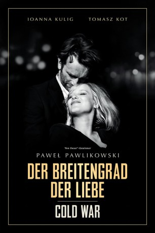

#10978 Cold War - Der Breitengrad der Liebe
Alternativ: Cold War (Englischer Titel)
Auszeichnungen: für 3 Oscars nominiert
 
 IMDB-Wertung: 7.7 / 10
IMDB-Wertung: 7.7 / 10  Metascore: 90
Metascore: 90 
Während des polnischen Wiederaufbaus ist der begabte Komponist Wiktor auf der Suche nach traditionellen Melodien für ein neues Tanz- und Musik-Ensemble. Dem Kulturleben seines Landes möchte er so frisches Leben einhauchen. Unter seinen Studentinnen ist auch die Sängerin Zula. Gleich im ersten Augenblick elektrisiert sie Wiktor, schön, hinreißend und energiegeladen ist Zula, und die beiden verlieben sich ineinander. Doch als das Repertoire des Ensembles zunehmend politisiert wird, nutzt Wiktor einen Auftritt in Ostberlin, um in den Westen zu fliehen. Entgegen der Verabredung bleibt Zula zurück, doch das Schicksal führt die beiden Jahre später in Paris erneut zueinander. So flammend ihre Liebe auch noch ist, so zerrissen ist das Paar jetzt und Zula muss eine tiefgreifende Entscheidung treffen. Der Film erzählt von der Liebe eines Paares, das vor dem Hintergrund des Kalten Krieges ohne einander nicht leben kann und miteinander fast keinen Frieden findet.
Jahr: 2018
Dauer: 88 Minuten
FSK: 12
Land: Polen Studio: Neue Visionen FilmverleihTonspuren:
Untertitel: Deutsch,
Auflösung: 1080p (1440x1080) Größe: 5580 MB
Genre: Drama, Musik, Liebe
Regisseur: Pawel Pawlikowski
Drehbuch: Pawel Pawlikowski, Pawel Pawlikowski, Janusz Glowacki, Piotr Borkowski
Soundtrack:
Darsteller:
- Joanna Kulig als Zula
- Tomasz Kot als Wiktor
- Borys Szyc als Kaczmarek
- Agata Kulesza als Irena
- Cédric Kahn als Michel
- Jeanne Balibar als Juliette
- Adam Woronowicz als Consul
- Adam Ferency als Minister
- Slavko Sobin als Sleuth 2
- Aloïse Sauvage als Waitress
 Adam Szyszkowski als Guard
Adam Szyszkowski als Guard- Aleksandra Yermak als Guest at the Party
- Krzysztof Materna als Announcer
- Martin Budny als Guest at the Party
- Vergil J. Smith als American / Guest at the Party (uncredited)
- Drazen Sivak als Sleuth 1
- Anna Zagórska als Ania
- Tomasz Markiewicz als Leader of ZMP
- Izabela Andrzejak als Mazurek
- Kamila Borowska als Mazurek
- Katarzyna Ciemniejewska als Mazurek
- Joanna Depczynska als Mazurek
- Gracjana Graczyk als Mazurek
- Dominika Ladziak als Mazurek
- Martyna Mankowska als Mazurek
- Zofia Nowak als Mazurek
- Anna Pas als Mazurek
- Patryk Jurczyk als Mazurek
- Pawel Kasprzak als Mazurek
- Piotr Kielbasa als Mazurek
- Damian Kuznik als Mazurek
- Damian Muszka als Mazurek
- Mateusz Skladanowski als Mazurek
- Dominik Skorek als Mazurek
- Piotr Zalipski als Mazurek
- Mateusz Zawada als Mazurek
- Giorgio Rayzacher als Guest at the Party
- Philip Lenkowsky als American (uncredited)
Datei: X:\2018(A-F)\Cold War - Der Breitengrad der Liebe (2018, FSK12, 1440x1080).mkv seit 15.04.2019
Festplatte: HD 2017(A-Z)-2018(A-F)
 Es gibt insgesamt 151 Filme in der Gruppe '2018(A-F)'
Es gibt insgesamt 151 Filme in der Gruppe '2018(A-F)'